Role: Product Designer
Timeline: 6 Weeks
Team: 1 Designer, 3 Engineers, 1 Product Manager
BitGo serves institutions, helping them custody their digital assets securely and providing services where they can then deploy their capital. These institutions custody billions of dollars with BitGo and are very security conscious.
They set up policies for their enterprises and if a transfer or action breaches the policy, an approval from administrator(s) is required. For example, a policy can be: if a withdrawal exceeds $1M, require approval from 2 administrators. The activity page is the hub to view pending requests (as an initiator) and approve/reject all the pending approvals (as an approver).
A tool to manage digital asset movement & activities across the entire enterprise
The activity page is central to users’ workflows and users often manage many pending approvals. However, the original experience is very bare bones, rigid, and has usability issues at scale. The more requests a user has, the more difficult it is for them to manage.
Additionally, there are situations where further action is required of the initiator once all required approvals have been received. With the existing organization of the page, users are often missing those additional actions, causing delays, confusion, and frustration.
How might we improve the user experience of the activity page, especially at scale?
It all started with a simple request from BitGo’s product operations team, an internal power user of the product, to add some filters to the page. It was a commonly received request along with sorting capabilities. The Product Manager and I quickly realized that there are a plethora of improvements to be made and filter/sort alone aren’t enough to solve the underlying pain points. So rather than taking feature requests to the page at face value, we went and spoke to users to find the root problem.
Pain points:
Key findings:
We also looked at all the different required actions that could occur to better understand the use cases that needed to be supported
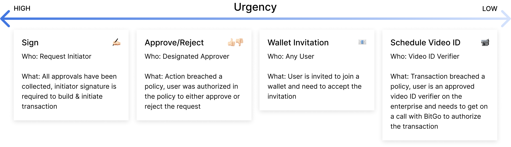All possible required actions analysis
Afterwards, the findings were synthesized and shared out to the team. I wanted to ensure that everyone working on the project understood the problems that we were solving and saw the value in what we could deliver. As I was designing, I reviewed often with cross-functional partners. I also leveraged the fact that we had internal users to test and validate early and iterate fast.
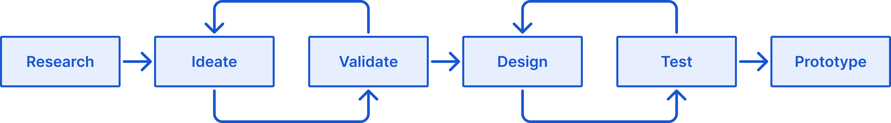The process
Beyond just filtering & sort, the solution turned out to be a mix of improvements and new features:
Surface urgent actions, improved organization & paradigm, more details, and bulk approve capabilities
Back when the product was simpler, splitting requests into requests pending other user approval and requests initiated by the user was sufficient. But as the product grew and became more powerful, the two table format no longer made sense as the life cycle of a request became more sophisticated. It resulted in required actions being scattered across the two tables, causing users to miss these actions.
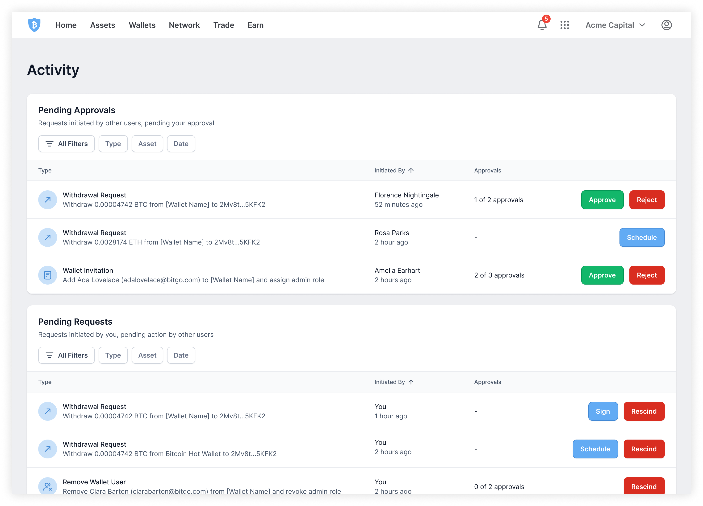Original activity page
To accommodate the growing variety of actions that users need to tend to, all requests were merged into one table with requests requiring user action to be bubbled to the top in order of descending urgency. Section headers are used to help visually break the table up a little without being as distinct as the previous design of two tables, thus allowing requests to move fluidly between the sections as necessary. Sections are collapsible to help with the management of many requests.
Sectioning and surfacing actions from everything else, in one table
This organization is the default because research showed that users typically come to the activity page knowing exactly what they’re looking for and will use filters or search. The second most common method users use to find a request is by initiation time. Within sort, users have the ability to toggle off the grouping of requests by action to get a true chronological sort.
Grouping by action or true chronological sort
The condition in which a request gets dismissed from the activity page was changed. There are now two tabs: in progress and past. Rather than dismissing a request once the required action was complete, it now only dismisses once the request was either completed or rejected. Once a request reaches the end of its life cycle, it can be found in the past tab. This enables users to easily stay up to date on all requests they’re involved in, even as an approver.
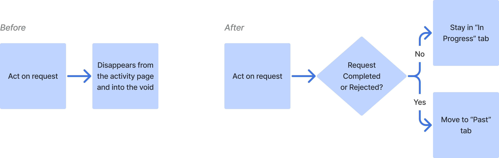Left: Old paradigm. Right: New paradigm.
User research showed that with the original paradigm, there’s often confusion when a request gets approved by someone else, leaving the user wondering on how the request concluded, if at all.
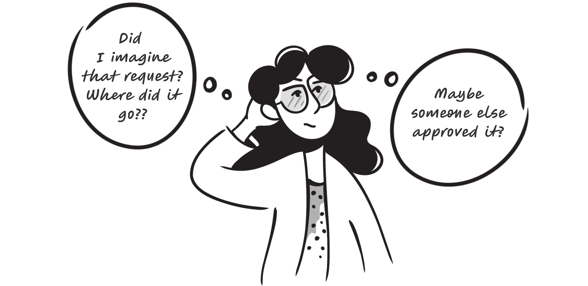Illustrations by @maryamato88
The past tab solves that confusion by informing the user of which request was resolved, and how, while they were away. When a request reaches the end of its life cycle and lands in the “past” tab, it will be badged to help users distinguish which concluded request(s) was unseen.
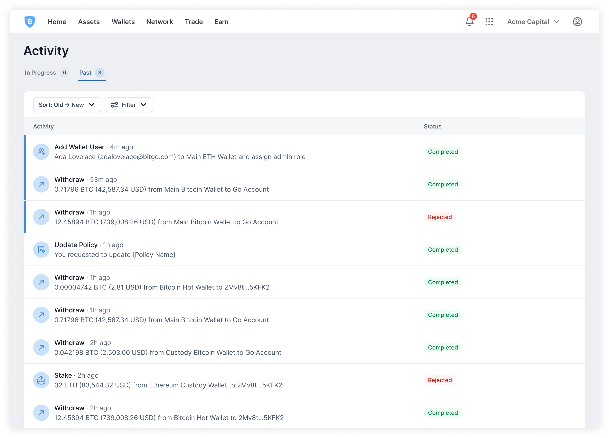Past tab
Pending approvals are a result of an action breaching a policy, which can be alarming. Users are assessing what the next steps are and the more details they have, the more informed they are.
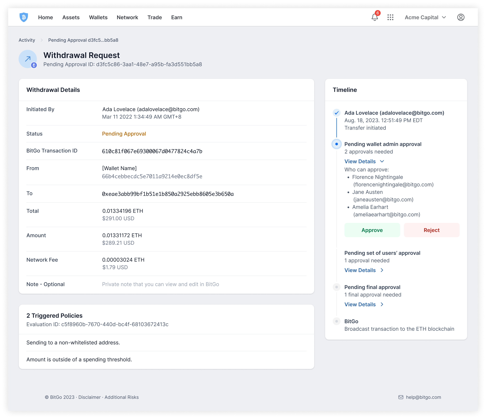Pending approval details
Each request has a details page. Two improvements were made to this page:
Left: original timeline. Right: new timeline.
There are a lot of states that a request can be in. Some states are pending on other approvers, BitGo, or the user themselves. In-product definitions of the states were added to help educate users. The drawer format enables users to have the reference on hand without disrupting their task.
Request status definitions
Tooltips on the status itself were explored. However, having the tooltip icon repeat itself down the entire column creates a lot of visual noise. Additionally, users had to learn each status one by one as they encountered them, which is more tedious and inefficient.
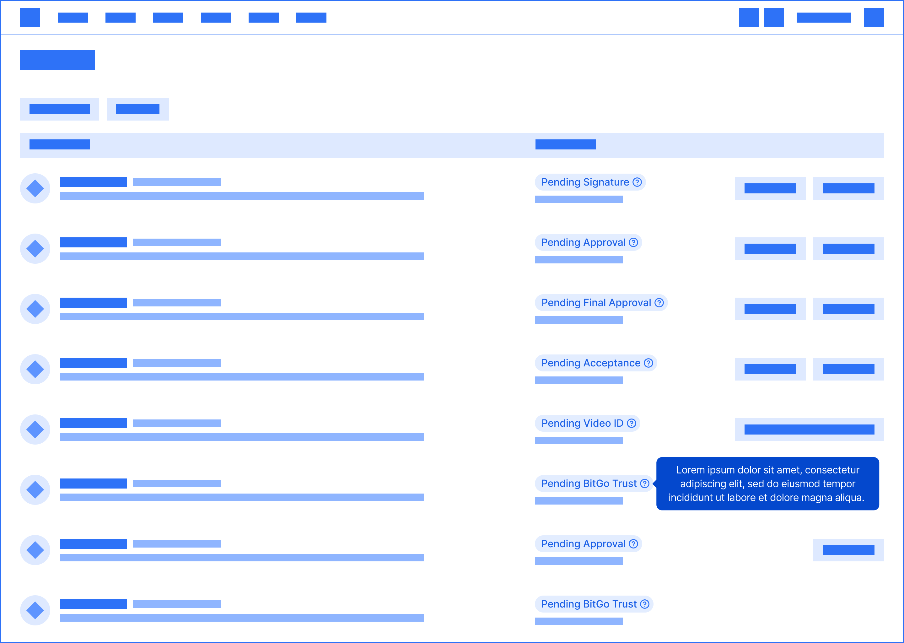For high-risk withdrawals, users are required to get on a video call with BitGo to authenticate the transaction. Users need to verify certain details of the withdrawal as well as complete an identification check. After speaking to BitGo’s operations team, we learned that users often verify multiple transactions in one call.
To find the details that are needed during the verification call, users have to click into the details to pull up the right information. Sometimes, they’d have to go into the individual wallets to find the transactions. This is tedious and frustrating for everyone involved and leads to longer delays.
All withdrawals pending video ID were gathered in one, easily accessible place.
Video ID hub entry point
Within the hub, only the relevant details during a video ID call are shown. With this feature, users are able to quickly and easily pull up all the transactions that need verification and have all the information needed right at their fingertips.
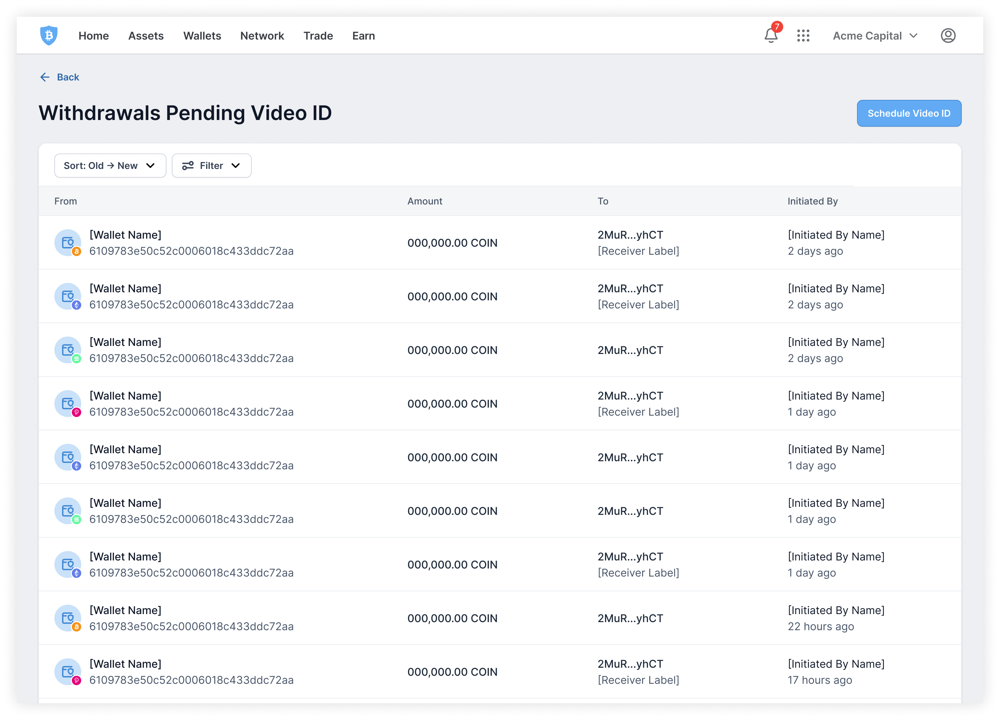Video ID hub
While users often verify multiple transactions, they may not verify all that are pending video ID verification. One iteration explored the concept of “snoozing” transactions to help users keep track of which transactions they wanted to verify on that particular call. However, it was de-scoped to P1 as there were improvements and features that would be more valuable.
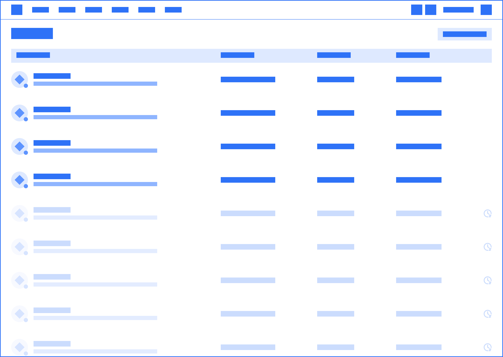To authorize a request, two-factor authentication is required. For some requests, a password entry will also be required. This makes authorizing multiple requests very repetitive and tedious, especially if the user’s 2FA method is one-time passwords (OTP) generated by an authenticator app as they would have to wait 30 seconds for the code to refresh before they can authorize the next request.
Authorizing a single request
The ability to bulk action was introduced, enabling users to authorize multiple requests under one two-factor authentication.
Selecting multiple requests to authorize. Figma variables made this super easy to prototype!
Users still need to verify the details of all the requests they’re authorizing. In crypto, wallets can be thought of as accounts, and some wallets have a password. To authorize requests from those wallets, the wallet password is required, so requests are grouped by wallets where possible. Then, requests are further grouped by action to make the details easier to scan.
Verifying requests. Requests grouped by wallet and then similar actions.
As users go through the requests and input the individual wallet passwords, the section for that wallet will then be collapsed to remove distraction and help users focus on the next batch of requests.
Collapsing verified requests
One iteration explored having all the authentication pieces gathered at the end so that users could just verify the details and then authenticate all at once. However, user feedback showed that they would prefer to have more friction to force the approver to take the time to verify the details. Users felt that this concept would make it too easy for approvers to be careless and make mistakes.
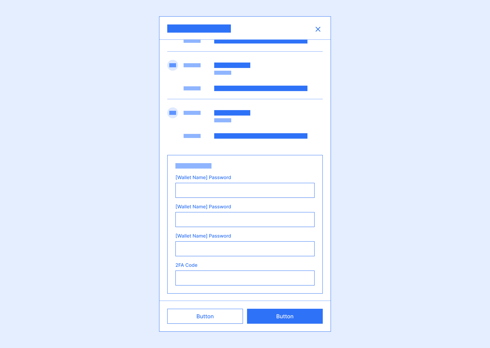Once a bulk authorization has been initiated, the requests will be processed in the background. Rather than blocking users from doing anything else in the product while the authorization is running, users can complete other tasks while staying up to date on which requests have been authorized.
Tracking authorization progress while completing other tasks
One common, yet painful, use case bulk authorization solves is onboarding new users. When a new user joins an enterprise and is invited to multiple wallets, it may take hours to accept each individual wallet invitation. With bulk authorization, users can accept hundreds of wallet invitations in the same time it takes to accept one.
Bulk accept invitations
A few visual design changes were also made to add some polish and make the activity page easier to scan:
Left: original activity page. Right: new activity page
For the request details page, interaction design was leveraged. Rather than having static copy buttons everywhere, they now only appear on hover.
Copy on hover
Partially shipped 🚀 partially in development 🚧
The feedback for the pieces that are shipped are positive. Important and urgent actions were no longer being missed – users now have a much easier time identifying what tasks they need to do. With the addition of more details and the paradigm shift, requests are being resolved in less time with less confusion and frustration.
Furthermore, the video ID hub was a huge hit with video ID verifiers and BitGo’s operations team. By identifying and solving for this pain point, video ID verifications became much more efficient, saving time for both the user and the operations team.
Interactions offer a lot of elegant and simple solves, but are often hard to think of when looking and designing on static screens. Through this project, I realized how many solutions are hidden between screens. Prototypes become monumental in communicating and collecting feedback; I really got to hone my prototyping chops and became fairly comfortable with variables.
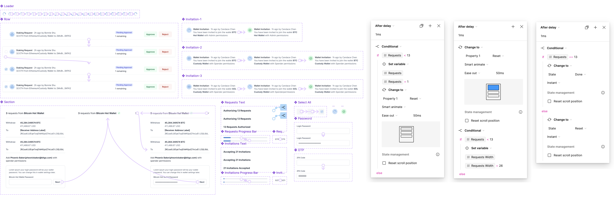A snippet of the figma components & variables used to create the prototypes you see in this case study
We always knew that we wanted the activity page to be more powerful. The vision is for it to become a place to oversee everything that’s happening in the enterprise, not just requests. It was an interesting exercise, designing with the vision in mind. I had to balance making sure the designs were flexible and scalable for the future but still solved the problems that exist today.
It’s such a privilege to have power users just a slack away. I really leveraged our internal users throughout the ideation process to quickly validate ideas. Being able to validate quickly and early gave the team a lot more confidence in what we were building. It made navigating the early stages of the design process much less daunting.